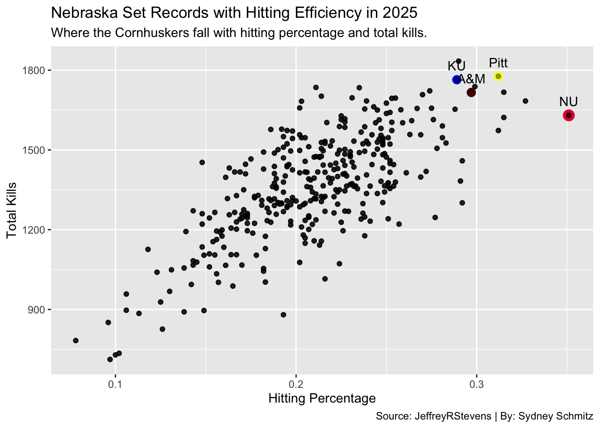
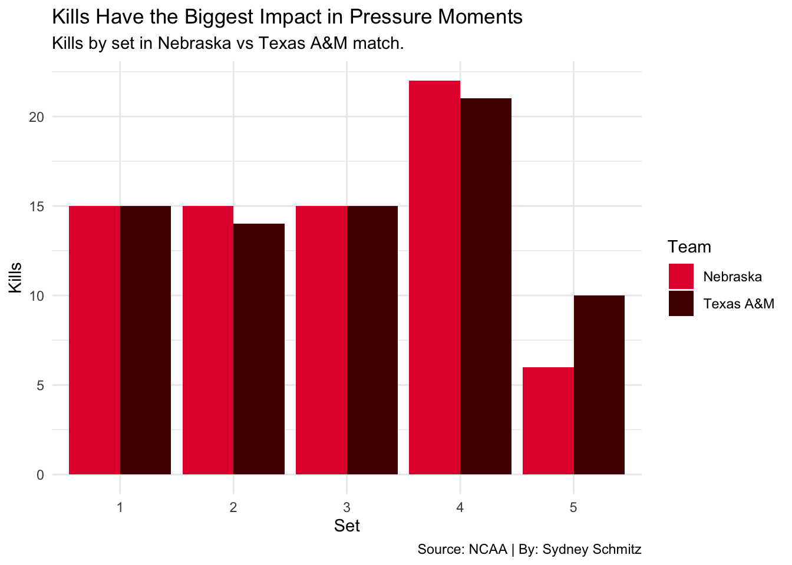
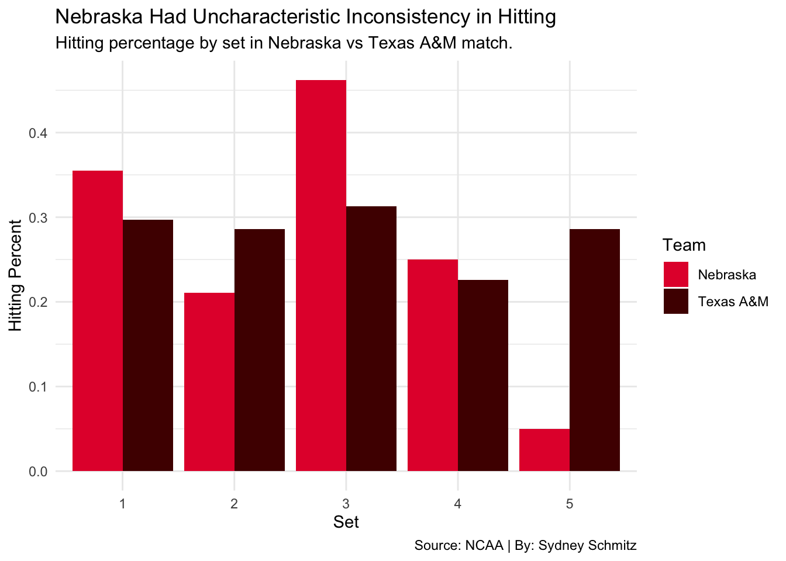
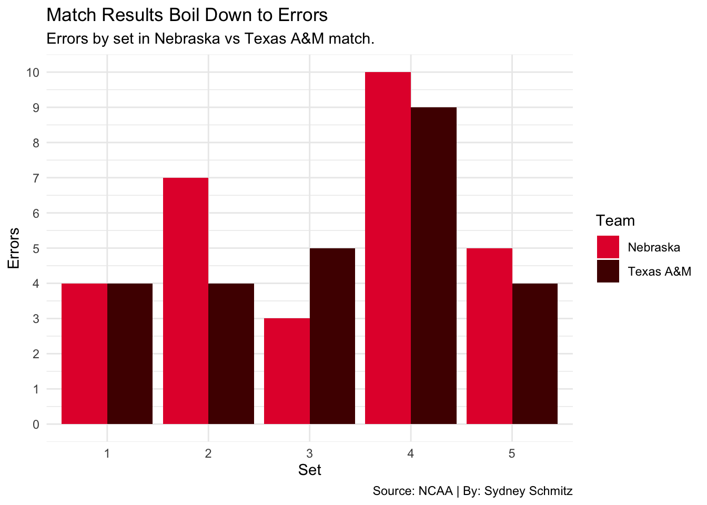

An Almost Perfect Season: What Made Nebraska Volleyball so Dominant in the 2025 Season?
And What Contributed to their Regional Final Loss?
Nebraska
NCAA Volleyball
Author
Sydney Schmitz
Published
April 27, 2026
Nebraska volleyball entered the 2025 season as one of the best and most consistent programs in the country, even with being lead by a new head coach in Dani Busboom Kelly. By the end of the regular season, the team had that title backed up with a perfect 30-0 record heading into the NCAA tournament and all the momentum on their side.
Code
library(tidyverse)library(gt)vb <-read_csv("wvb_results.csv")vb <- vb |>mutate(Win =ifelse(substr(Result, 1, 1) =="W", 1, 0),Loss =ifelse(substr(Result, 1, 1) =="L", 1, 0) )team_records <- vb |>group_by(Team, Conference) |>summarise(Wins =sum(Win, na.rm =TRUE),Losses =sum(Loss, na.rm =TRUE),.groups ="drop" ) |>arrange(desc(Wins))top10 <- team_records |>slice(1:10)top10 |>gt() |>tab_header(title ="Nebraska's Record was the Overall Best",subtitle ="How the Cornhuskers ended the 2025 season compared to other top teams." ) |>opt_row_striping() |>tab_style(style =list(cell_fill(color ="grey70"),cell_text(weight ="bold") ),locations =cells_body(rows = Team =="Nebraska") ) |>tab_style(style =cell_text(color ="darkgreen", weight ="bold"),locations =cells_body(columns = Wins) ) |>tab_style(style =cell_text(color ="red", weight ="bold"),locations =cells_body(columns = Losses) ) |>tab_source_note(source_note ="Source: JeffreyRStevens | By: Sydney Schmitz")
Nebraska's Record was the Overall Best
How the Cornhuskers ended the 2025 season compared to other top teams.
Team
Conference
Wins
Losses
Nebraska
Big Ten
33
1
Kentucky
SEC
30
3
Pittsburgh
ACC
30
5
Stanford
ACC
29
5
Texas A&M
SEC
29
4
Arizona St.
Big 12
28
4
Creighton
Big East
28
6
Wisconsin
Big Ten
28
5
Cal Poly
Big West
27
8
Miami (FL)
ACC
27
6
Source: JeffreyRStevens | By: Sydney Schmitz
Code
ggsave("image.png")
This table brings up a few questions: how did Nebraska get to playing at such a high level? More notably, what lead to that single loss?
The Cornhuskers dropped their first set of the season early on to their in-state rival, Creighton, on September 16. From there, they went on an impressive 48-set win streak, not losing a single set again until mid November.
This consistent and efficient winning is shown through Nebraska’s high team hitting percentage. In fact, a school record of .351 was set and ended as the best NCAA team in terms of hitting percentage this season.
Code
vb <-read_csv("wvb_clean.csv")ggplot(vb, aes(x=`Hit Pct`, y=Kills)) +geom_point(alpha=0.4) +geom_point(data=vb %>%filter(Team =="Nebraska"),aes(x=`Hit Pct`, y=Kills),size=4,color="#E41C38") +geom_text(data=vb |>filter(Team =="Nebraska"),aes(label="NU"),vjust=-1) +geom_point(alpha=0.4) +geom_point(data=vb %>%filter(Team =="Kentucky"),aes(x=`Hit Pct`, y=Kills),size=3,color="blue") +geom_text(data=vb |>filter(Team =="Kentucky"),aes(label="KU"),vjust=-1)+geom_point(alpha=0.4) +geom_point(data=vb %>%filter(Team =="Pittsburgh"),aes(x=`Hit Pct`, y=Kills),size=3,color="yellow") +geom_text(data=vb |>filter(Team =="Pittsburgh"),aes(label="Pitt"),vjust=-1) +geom_point(alpha=0.4) +geom_point(data=vb %>%filter(Team =="Texas A&M"),aes(x=`Hit Pct`, y=Kills),size=3,color="#500000") +geom_text(data=vb |>filter(Team =="Texas A&M"),aes(label="A&M"),vjust=-1)+labs(title="Nebraska Set Records with Hitting Efficiency in 2025",subtitle ="Where the Cornhuskers fall with hitting percentage and total kills.",caption ="Source: JeffreyRStevens | By: Sydney Schmitz",x="Hitting Percentage",y="Total Kills")

Although this chart shows Nebraska’s dominance in hitting percentage, it tells another story about what statistic they might have lacked: kills.
Pittsburgh, Kansas and Texas A&M — the next three teams in record after Nebraska — all have around a .300 hitting percentage but are noticeably higher in total kills this season. Yes, these teams played more sets than Nebraska which allowed them more opportunities to get kills, but it also suggests while consistency in hitting is important, kills are what win when the top teams match up.
This leads us to what happened in the Regional Final match against Texas A&M that handed Nebraska it’s first and only lost of the 2025 season.
In this match, Nebraska’s strengths were disrupted and weaknesses exposed in a way that had not happened all season — even having home court advantage in the Bob Devaney Sports Center. Texas A&M won the first two in this five-set match (25-22), with Nebraska taking the third (25-20) and fourth (37-35). Ultimately, A&M took the fifth in a final score of 15-13.
Let’s look into the most important match statistics, set-by-set to see where it all went wrong for the Cornhuskers in this disappointing loss.
Code
nebraska <-read_csv("Nebmatch.csv") |>mutate(Team ="Nebraska")AM <-read_csv("AMmatch.csv") |>mutate(Team ="Texas A&M")match_data <-bind_rows(nebraska, AM)match_long <- match_data |>pivot_longer(cols =c(K, E, PCT),names_to ="Stat",values_to ="Value")ggplot(match_data, aes(x =factor(Set), y = K, fill = Team)) +geom_col(position ="dodge") +scale_fill_manual(values =c("Nebraska"="#E41C38", "Texas A&M"="#500000")) +labs(title ="Kills Have the Biggest Impact in Pressure Moments",subtitle ="Kills by set in Nebraska vs Texas A&M match.",caption ="Source: NCAA | By: Sydney Schmitz",x ="Set",y ="Kills",fill ="Team" ) +theme_minimal()

This chart shows that, surprisingly, kills did not play as big of a role in the outcome as expected, with close to even numbers across the first four sets. However in the fifth set, A&M had almost double the amount of kills as Nebraska, showing their importance in shorter sets and must-win situations.
Code
ggplot(match_data, aes(x =factor(Set), y = PCT, fill = Team)) +geom_col(position ="dodge") +scale_fill_manual(values =c("Nebraska"="#E41C38", "Texas A&M"="#500000")) +labs(title ="Nebraska Had Uncharacteristic Inconsistency in Hitting",subtitle ="Hitting percentage by set in Nebraska vs Texas A&M match.",caption ="Source: NCAA | By: Sydney Schmitz",x ="Set",y ="Hitting Percent",fill ="Team" ) +theme_minimal()

This next set-by-set chart shows a massive difference between Nebraska’s regular season play and performance in this final match. Sets 2, 4 and 5 were quite lower than the standard .351 hitting percentage for the season, indicating a large inconsistency. Although the team had an incredibly strong third set hitting over .450, it wasn’t enough to get the momentum back and win the match. In a game like volleyball that must be played point-by-point, being consistent has a much greater impact than infrequent bursts of power.
Code
ggplot(match_data, aes(x =factor(Set), y = E, fill = Team)) +geom_col(position ="dodge") +scale_fill_manual(values =c("Nebraska"="#E41C38", "Texas A&M"="#500000")) +scale_y_continuous(breaks = scales::pretty_breaks(n =10)) +labs(title ="Match Results Boil Down to Errors",subtitle ="Errors by set in Nebraska vs Texas A&M match.",caption ="Source: NCAA | By: Sydney Schmitz",x ="Set",y ="Errors",fill ="Team" ) +theme_minimal()

The final piece of the match story comes from errors. Nebraska’s error totals increased in the sets that ultimately swung the match in Texas A&M’s favor. Although they had more errors in the competitive 37-point fourth set, Nebraska ultimately won it through upping the hitting percentage and number of kills. Besides that set, errors are a pretty clear indicator of the set outcome.
These three charts show where Nebraska’s regular season play contrasted from the season-ending match. Rather than being overpowered, the team was defeated by uncharacteristic mistakes and a lack of consistency between sets. What made the team so dominant all regular season was exactly what defeated them in the end.
Nebraska’s historic 2025 season will still be remembered by a 33-win achievement, new records set and the start of a new era with coach Dani Busboom Kelly. But it will also be defined, especially in the minds of Cornhusker fans, through a single, devastating match that kept Nebraska from winning an anticipated national championship title.